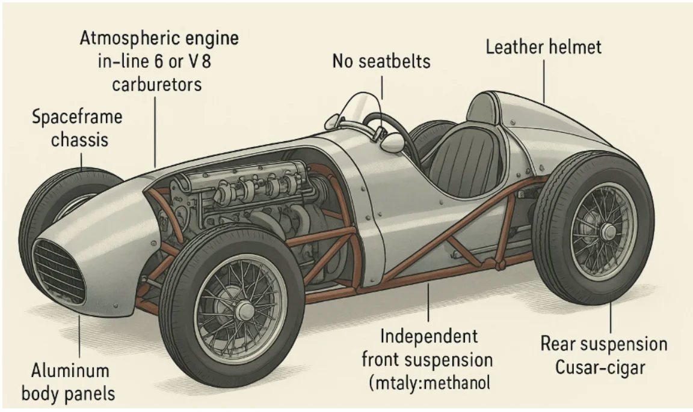
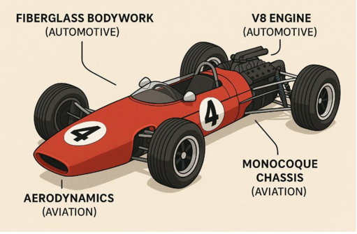
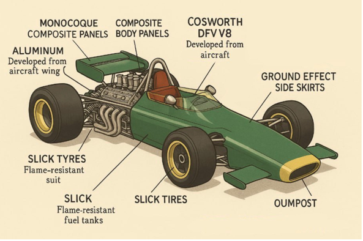
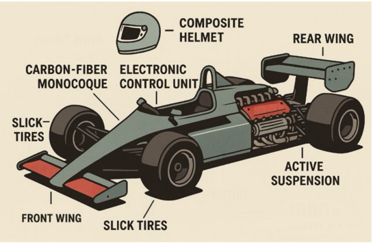
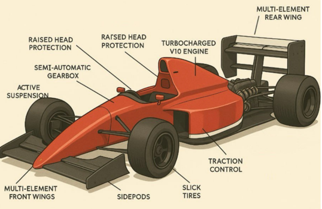

1950-е годы
Когда первый официальный сезон Формулы-1 стартует в 1950 году, Европа всё ещё сохраняет запах гари. На улицах Лондона стоят недостроенные дома, в Берлине среди новых кварталов виднеются обугленные остатки руин. В Италии, пережившей интенсивные бомбардировки, остаются видимые следы разрушений. Поезда снова начинают ходить, но с перебоями, а заводы работают на устаревшем оборудовании, и в воздухе витает тишина — словно мир пережил взрыв, не в силах сразу оправиться от него.
Мир ещё не успел отдохнуть — он лишь перешёл от войны к выживанию. И в этом выживании решающую роль теперь играют не идеологии и политические флаги, а железо, станки и чертежи. Те, кто ещё вчера клепал самолёты, теперь создают мотоциклы, а те, кто выпускал бомбардировщики, берутся за кузова спортивных машин. Не политическая программа, а способность адаптироваться и выжить становится основной целью для послевоенных индустриальных гигантов.
Технологии не исчезают вместе с армиями, они перерождаются, переходя на новые рельсы. Заводы, производившие двигатели для танков, теперь изготавливают моторы для автомобилей. Химики, создававшие горючее для боевых самолётов, начинают эксперименты с топливом для автогонок. Сталь, резина, алюминий, стеклоткань — всё, что когда-то служило разрушению, теперь направляется в мир созидания.
Однако это созидание не изобилие, а скорее восстановление через переработку. Инженеры не строят машины с нуля, они собирают их из остатков. Гоночные болиды 1950-х годов — это своего рода "франкенштейны", созданные из обломков войны, ремесел и амбиций. В каждом таком болиде — сплав железа, масла и неиссякаемой воли к жизни.
Не случайно именно в этот момент возникает Формула-1. Это не просто спорт, это индустриальный ритуал, через который каждая страна в послевоенной Европе пытается заявить о своём выживании и возвращении на мировую арену. Alfa Romeo, Ferrari — не просто имена, это символы, за которыми стоят не только победы на трассах, но и битвы за возвращение к жизни после разрушений войны. Эти гонки становятся не только соревнованиями машин, но и поствоенным состязанием смыслов, где скорость и техника заменяют оружие и идеологии.
1950-е — это эпоха, когда технический прогресс становится актом надежды, и Формула-1 становится его ярким символом. В этой борьбе за технологическое превосходство, за каждое очко и каждую секунду на трассе, куется будущее послевоенной Европы, и каждый виток на кольце — это не только ускорение машины, но и ускорение самого времени, двигающего мир от разрушений к восстановлению.
Формула-1 в первые десятилетия своего существования была чем-то большим, чем просто автогонками. Это был мир, в котором механика и металл, рожденные для разрушения, обретали новую жизнь, превращаясь в символы мира мирного, но такого же жестокого и стремительного. Если внимательно прислушаться к реву моторов тех лет, можно было бы уловить не только шум двигателя, но и отголоски войны, которые отголоском пронеслись через послевоенную Европу.
В 1950-х годах чемпионат был далеко не про научные прорывы, как мы их понимаем сегодня. Это была эпоха переработки старых технологий, сборки чего-то нового из того, что осталось. И основным донором, без которого не существовало бы первых болидов, была сама война. Точнее — её механическая анатомия.
Авиация Второй мировой войны стала венцом инженерной мысли, создавший технологии, которые потом нашли свое продолжение в мире автогонок. Все лучшие достижения того времени — легкие конструкции, мощные двигатели, аэродинамичные формы — создавались для одного: выживания в небе, под шквальным огнем. В этих условиях инженеры научились работать с массой, прочностью, балансом. И когда война закончилась, эти технологии, словно наследие прошлого, остались. Болиды Формулы-1 1950-х буквально родились из того, что осталось в ангарах.
Рама болида в то время напоминала каркас боевых самолётов. Стальные трубчатые фермы, как у истребителей RAF или Messerschmitt — лёгкие, но при этом невероятно прочные. Эти конструкции можно было варить, собирать, усиливать. На ощупь — они были знакомы каждому инженеру, как часть их былой жизни.
Обшивка кузова — тонкие листы алюминия, отформованные по форме, как и обшивали фюзеляжи самолётов, например, Douglas DC-3. Методы крепления — клёпка, гибка, швы — были перенесены из авиационного ремесла. Это не было случайностью. Каждая деталь болида 1950-х была продолжением того, что когда-то служило для неба.
Двигатели? V12, рядные шестицилиндровые — они почти всегда имели свои корни в авиации. Alfa Romeo, Maserati — каждый из этих производителей привнес в свою машину наследие военных моторов. Эти двигатели, не всегда отличавшиеся высокой надежностью, но поражавшие своей мощностью, были достойными наследниками летающих машин. Когда мотор начинал рычать, казалось, что он мог унести свой болид в небо.
Топливо на первых гоночных машинах тоже было необычным. Это был не бензин, а смесь метанола, касторового масла и ацетона — химия, использовавшаяся для авиации, а не для автомобильных двигателей. Именно такой коктейль оживлял первые болиды, придавая гонкам особый запах. Всё было настолько похоже на полёт, что сам процесс гонки иногда напоминал не соревнование, а воздушное сражение.
Культура измерений, представления о том, что такое оптимальность, аэродинамика и баланс, пришли из лётной школы. Болид 1950-х годов был чем-то вроде самолёта без крыльев, и это тоже не было случайностью. Он был продолжением того, что пережило войны в небе и теперь должно было найти свой новый путь на земле.
Формула-1 в эти годы стала не просто ареной спортивных гонок, а местом, где технологии убийства превращались в технологии скорости. Это было переосмысление, и одновременно техническое очищение через спорт. Болиды того времени — это не просто автомобили. Это были машины, созданные из пепла войны, машины, которые могли лишь быть символом мира, где скорость становится новой формой мощи.
Если прислушаться к звуку двигателя болида 1950 года, можно услышать в нём не только рев мотора, но и эхо летающей машины, вернувшейся с войны. И теперь она готова мчаться вперёд, не падать вниз, а стремительно лететь по трассе.
Формула-1 начиналась не в стерильных аэродинамических трубах и не на тщательно выверенных чертежах современных лабораторий. Она рождалась в цехах с закопчёнными стенами, в сараях с деревянными формами для алюминия, среди запаха масла, табака и горелого железа. Первая половина XX века оставила Европе не только следы разрушений, но и десятилетия, когда каждая механика, каждое колесо и каждая деталь болида не были результатом холодных вычислений, а всего лишь продолжением ремесла, пережившего войну. Машины первых сезонов Формулы-1 не были футуристическими капсулами скорости, как мы их себе представляем сегодня. Это были памятники довоенному мастерству, отполированными временем и жестокими условиями реальности.
Мир ещё не успел изобрести новые технологии, а старые — ещё не устали. В эти промежутки между войной и научным прогрессом жили инженеры старой школы. Они не верили в расчёты, не доверяли компьютерным моделям и числовым оптимизациям. Они верили в руки, в наслушанность, в привычку. Каждый элемент болида 1950-х годов был не столько результатом инновации, сколько эволюцией давно знакомого металла. Подвеска на листовых рессорах, скрипящая, как телега, была примером техники тракторов, довоенных лимузинов и старых грузовиков — грубая, тяжёлая, но верная. Это была не техничность комфорта, это была надёжность. Время не спрашивало, что модно, оно спрашивало, что работает. В этот период, спустя всего несколько лет после катастрофических разрушений Второй мировой войны, старые технологии, ещё живые, становились фундаментом того, что только начинало называться автогонками.
Рулевое управление, будто из другого века, с червячными передачами и тяжёлым рулём, с мёртвыми зонами — это были не инженерные достижения нового времени, а ремесленные решения старой школы. Болид не столько поворачивал, сколько "намекал" на поворот, но всё же — он ехал. Потому что за этим стояла культура машин, которая ехала всегда. Сталь, железо, ручной труд и мастерство. Никакой точности — но прочность и честность. Жёсткий задний мост, барабанные тормоза и спицованные колёса были элементами, которые уже тогда считались устаревшими, но продолжали использоваться. Это была инженерия, которая смотрела не в будущее, а в настоящее, где не было места для экспериментов с гиперсовременными материалами, а было только знание того, что работает и что проверено временем.
Кузова этих болидов собирались вручную, с меркой по глазу, клепались, как броня для старых военных машин. На них не было симметрии, но была душа. Каждая деталь была отполирована не временем, а руками тех, кто верил в ощущение металла, а не в расчёты на компьютерах. Это были машины, в которых не было глянца будущего. В них жила память о ремесле, о времени, когда каждая деталь, каждая шовка имела своё значение. Формула-1 того времени была мостом от старой механики и традиции, переплавленной в прогресс.
Эта инженерия, с корнями, уходящими в 1930-е, стала плацдармом для всего, что будет потом. Она была несовершенна, но честна. Она была не точна, но крепка. В этом была её сила — она служила связующим звеном между традицией и прогрессом. Она стала не только основой будущих чемпионатов, но и символом той эпохи, когда мир, порубленный войной, всё ещё искал свой путь. И несмотря на несовершенство, именно она заслужила своё место в истории Формулы-1, как родоначальник того, что мы знаем сегодня как величайшие гонки на планете.
Формула-1 1950-х не знала ни конвейеров, ни автоматизации, ни цифровой точности. Её не собирали на заводах-гигантах, не проектировали в офисах с кондиционерами, не рассчитывали в программах с графическим интерфейсом. Она рождалась в ангарах, где ещё эхом отдавался рокот авиационных моторов времён войны, где воздух пропитан запахом алюминия, масла и человеческой упрямости. Это была эпоха, когда инженерия была ремеслом, а каждый болид — изделием ручной работы, в прямом и глубоком смысле этого слова.
Мир только начал подниматься из руин Второй мировой войны. В Европе, от Неаполя до Нюрнберга, фабрики переосмысляли своё назначение. Заводы, на которых ещё недавно клепали корпуса истребителей Messerschmitt Bf 109 или итальянских Macchi C.202, теперь клепали кузова гоночных машин. Фюзеляжи превратились в обтекаемые алюминиевые панели, авиационные моторы — в сердце болидов. Это была не романтика. Это была необходимость: металл оставался тем же, а руки, которые его знали, не забыли.
Это была эпоха, когда чертёж существовал не на ватмане или в AutoCAD, а в голове мастера. Изгиб панели определялся не по графику, а пальцами, водящими по криволинейной форме. Сварной шов был не эстетикой, а границей между жизнью и смертью: на нём держалась конструкция, от него зависела судьба гонщика. Рама делалась не по ГОСТу, а “по памяти” — как на Spitfire, как на DC-3. В Формуле-1 тех лет жила инженерия войны, но с другим вектором — не на уничтожение, а на стремление к скорости.
Создатели тех машин редко имели дипломы. Но у них был опыт — опыт поколений. Они знали, как поведёт себя алюминий на температуре, как дрожит металл при опасной нагрузке, как меняется звук двигателя, когда в поршне что-то пошло не так. Они не доверяли формулам — доверяли слуху, чутью, коже. Измеряли не микрометром, а «на глаз, но точно». Варили не по инструкции — а «как правильно». Клёпали — «как всегда», и это «всегда» было точнее любого стандарта.
Инженер Формулы-1 1950-х — это не чертёжник, не аналитик. Это скульптор в мазуте и гарях. Его лаборатория — это верстак, тиски, молоток. Его инструменты — интуиция, зрение, пальцы. Он не говорил о сопротивлении материалов — он чувствовал его. Его проектирование было осязаемым, шумным, грубым и невероятно живым.
И именно в этом — историческая суть той эпохи. Европа ещё не знала, что значит "высокоточное моделирование", зато она помнила, как строится техника, которая держится не на расчётах, а на опыте. Это были последние годы великой инженерной интуиции — до прихода калькуляторов, потом компьютеров, потом CFD-симуляций. Это было время, когда машины собирали не чертежи, а люди. Когда каждое движение сварки было актом веры, а не пунктом техпроцесса.
Болиды тех лет не были идеальны. Но они были живые. Именно потому, глядя сегодня на Ferrari 500 или Maserati 250F, кажется, что металл у них тёплый, как рука мастера. В них нет стерильности. Есть память. Есть голос времени — времени, когда гонки ещё пахли металлом, а инженерия была делом сердца.
В Формуле-1 1950-х годов гонщик был не просто спортсменом. Он был фигурой переходной эпохи — из мира войны в мир мира, но мира, в котором всё ещё пахло гарью, металлом и мужеством. Эти люди не пришли с автодромов — они пришли с фронтов. Они знали вкус пепла, звук разрыва, жар от мотора, рев, от которого дрожат стекла. Только теперь вместо пулемёта у них был руль, а вместо истребителя — болид, собранный из обломков той самой войны.
История Формулы-1 начинается в 1950 году — всего через пять лет после окончания Второй мировой. Европа ещё не восстановилась: города в руинах, железные дороги только возвращают жизнь, заводы — перепрофилируются. А вместе с ними меняются и люди. Многие из первых пилотов Ф1 — это бывшие военные. Джузеппе Фарина, первый чемпион мира, был офицером итальянской армии. Альберто Аскари служил в инженерных войсках. Луиджи Виллорези — участник подполья. Майк Хоторн и Стирлинг Мосс выросли в Англии, где военные аэродромы были частью детства.
Они не просто садились за руль — они возвращались туда, где ещё звучал мотор. Для них гонка была не развлечением, а продолжением фронта. Вместо пилотки — кожаный шлем. Вместо парашюта — очки на ремешке. Перчатки — не стиль, а контроль. Они знали, что значит сидеть на линии между жизнью и смертью. В болиде не было каркаса, не было защиты, не было шанса на ошибку. Ремни ставили не всегда. Пожар — не гипотеза, а вероятность. И они ехали. Не потому что были безрассудны, а потому что другой жизни они не знали.
Формула-1 1950-х была бескомпромиссна. Она не прощала. Когда машина вспыхивала, не было команды спасения, не было системы HALO, не было медиков в зоне доступа. Всё зависело от мгновения. Успел — жив. Не успел — хроника трагедии. И трагедии случались часто. Джоэ Боннье, Луиджи Муззо, Пьеро Карини — их имена вписаны в списки, где спорт и смерть идут бок о бок. И всё равно — другие продолжали выходить на старт.
Героизм был не выбором, а нормой. Это было не украшение карьеры, а необходимая часть гонки. Страх? Он был, но молчаливый. Его не показывали. Потому что гонщик 1950-х жил иначе. Он не стремился к смерти — он просто не позволял страху её диктовать. Для него риск был не экстримом, а формой достоинства. Он ехал не за славой, а за истиной. За той скоростью, в которой исчезают все лишние смыслы, и остаётся только одно — быть.
На стартовой решётке Гран-при 1950-х выстраивались не просто машины. Выстраивались амбиции. Выстраивались государства. Каждый болид, сверкающий алюминием и надрывом мотора, был не только снарядом скорости — он был визитной карточкой нации, выкованной из стали, топлива, инженерной школы и послевоенного стремления сказать миру: «Мы вернулись. Мы умеем. Мы снова сила».
В разрушенной Европе, где ещё не успели стереть следы взрывов, язык дипломатии изменился. Вместо пушек заговорили технологии. Формула-1 стала новым фронтом — не военным, но стратегическим. Не через окопы, а через аэродинамику. Не через боевые порядки, а через пит-стопы. Гонщик уже не был солдатом, но он всё ещё был воином — на новом поле битвы, где решали не пехота и флот, а инженеры, гонщики и конструкторы.
Политический фон эпохи диктовал контекст. Началась Холодная война. СССР стремительно создавал космическую программу, штурмовал орбиту, запускал «Спутник» и строил ракеты. Запад отвечал не только флотилиями и базами в Европе, но и тонкой, почти эстетской пропагандой технического превосходства. Формула-1 оказалась её витриной: скорости, моторы, дизайн, риск — всё это стало аргументом в политической риторике. Монца, Спа, Сильверстоун — каждый вираж, каждая победа стала сообщением: мы не отстаём.
Гонка превратилась в мирный парад мощи. Без выстрелов, но с ревом двигателей. Без пехоты, но с пилотами, готовыми рисковать жизнью ради флага, гимна и команды. Каждая команда — как министерство: Ferrari говорила от имени Италии: красота, страсть, ремесло и национальное упорство, выросшее из эпохи Муссолини в новую, гоночную идентичность. BRM представляла Британию: островную гордость, инженерное упрямство и попытку вновь доказать, что Лондон — центр технической мысли. Maserati воплощала в себе Европу романтиков — тех, кто верил, что мотор может звучать как поэзия, а металл можно сформовать, как скульптуру. Даже отсутствие американцев в этих гонках говорило о вещах: США делали ставку на скорость в воздухе и на авиацию, Европа — на колесах и трассах. Это было тонкое разделение влияния. Пока на глобусе перекраивались границы, Формула-1 рисовала свою карту — карту технического превосходства. Не по геополитике, а по секундам на круге.
1950-е — это не просто хронологическое начало чемпионата мира Формулы-1. Это временной мост между эпохами: между громом артиллерии и шелестом аэродинамики, между механиком у верстака и инженером за терминалом. Это десятилетие, в котором человечество делало первый, ещё неловкий шаг из руин XX века в цифровую эру, и Формула-1 стала его проекцией на асфальт.
Послевоенная Европа не имела излишков — она имела обломки. Из них и рождались первые болиды. Не на автоматических линиях и не в стерильных лабораториях, а в авиационных мастерских, где всё ещё пахло керосином и алюминиевой стружкой. Где станки помнили истребители, а чертёж был на стене не как дизайн, а как инструкция к выживанию. Болид того времени — не технопроект, а артефакт восстановления: собранный вручную из стали, клёпаного алюминия, остатков авиационных технологий и огромного запаса интуиции.
Исторический контекст говорит сам за себя: Европа ещё строила заново свою экономику, инфраструктуру и идентичность. Заводы, производившие бронетехнику и бомбардировщики, теперь выпускали компоненты для болидов. Люди, выжившие в огне войны, теперь боролись с огнём на трассе. Это было время, когда технический прогресс не диктовался рынком — он рождался из желания снова жить, двигаться, побеждать.
Инженер Формулы-1 в 1950-е — это не аналитик с ноутбуком, а проводник через неизвестное. Он не вводит параметры в симуляцию — он слушает, как стучит вал, как поёт мотор, как вибрация говорит о слабом месте в шасси. Его формула — в голове, его испытания — на слух, его расчёт — на ощупь. Это был век наития, где каждая конструкция рождалась не как стандарт, а как уникальное творение. Это была инженерия, сродни джазу: импровизация на основе строгой дисциплины.
И всё же, где-то за горизонтом уже стучалась другая эра. Эра вычислений, симметрии, теории. Началась подготовка к полётам в космос, и вместе с ней — инженерная революция. Скоро в автоспорте появятся аэродинамические трубы, электронные мозги, системы анализа. Инженеров сменят аналитики, ремесленников — разработчики алгоритмов. Формула-1 перейдёт от наковальни к клавиатуре.
Но в 1950-х, в этих десяти годах между фронтом и формулой, болид был ещё живым существом. Он пах маслом, он сотрясался от неидеального вала, он боялся огня, как человек. Его строили люди — не системы. И в этом была его сила, его уязвимость, его бессмертие.
1950-е — это последняя глава рукотворной Формулы-1. Её болиды не были точны, но были честны. Они не летали — но несли в себе дух полёта. И пока на горизонте накапливались новые технологии, на трассах 50-х летал последний дым ручного труда — и рождалась легенда, которую сегодня зовут скоростью.
1960-е годы
Шестидесятые годы были временем, когда мир перестал быть прежним. Старые порядки трещали, а на горизонте вырастали новые континенты смысла: в политике, в культуре, в науке — и, разумеется, в автоспорте. Формула-1 1960-х перестала быть просто гонкой машин. Она стала зеркалом глобальной трансформации, ареной, на которой схлестнулись технологии, идеологии и амбиции.
Пока в небе Юрий Гагарин совершал первый виток вокруг планеты, на трассах Монцы, Спа и Реймса другие герои разгонялись к 300 км/ч. Космос стал новой границей для человечества, но именно на земле продолжалась битва за технологическое превосходство. Гонки — это тоже космическая гонка, только в плоскости. Кто быстрее, кто точнее, кто умнее? Формула-1 стала лабораторией амбиций — национальных, инженерных, человеческих.
СССР и США запускали спутники и строили ракеты, а Ferrari, Lotus и BRM — испытывали монококи, шасси из авиационного алюминия, экспериментировали с аэродинамикой и компоновкой. Битва за подиум всё больше напоминала гонку за престиж: побеждая на трассе, ты демонстрируешь миру не только скорость, но и научную зрелость, технологическую смелость, индустриальную мощь.
Эта эпоха подарила миру не только лунный модуль, но и революции на гоночных трассах. Конец трубчатым рамам, начало эры монококов. Инженеры перестали быть ремесленниками — они стали системными конструкторами. Появляются аэродинамические испытания, первые расчёты на электронных машинах, первые CAD-чертежи. Это была новая инженерия — холодная, точная, перспективная.
Но Формула-1 60-х — это не только трансмиссии и коэффициенты. Это ещё и дух времени. Битлы на пластинках, Че Гевара на плакатах, свобода в воздухе. На фоне студенческих протестов, деколонизации и культурной революции гонщики становились новыми рок-звёздами. Джим Кларк, Грэм Хилл, Дэн Герни — их образы выходили за пределы автоспорта. Они были лицами эпохи, лицами мужества, грации, риска.
Тем временем Африка и Азия, только что сбросившие оковы колониализма, стремились заявить о себе на глобальной арене. И Формула-1, как одна из самых зрелищных и технологичных площадок того времени, стала способом продемонстрировать своё место в мире. Новые страны искали доступ в паддок не просто ради гонок — ради признания. Потому что уже тогда было ясно: где технология, там и статус.
Гонки перестали быть "внутри Европы". Они вышли на мировой уровень — сначала в Южную Африку, потом в Америку, потом дальше. Расширение календаря стало не только маркетингом, но и дипломатией. Победа на Гран-при — это уже не просто трофей. Это акт заявления. Государства вкладывались в команды, команды — в разработку, инженеры — в точность, а пилоты — в абсолютное доверие к прогрессу.
Формула-1 в 1960-е — это больше, чем спорт. Это арена, на которой решаются вопросы глобального влияния. Это политическая витрина. Это дипломатия через аэродинамику. Это прорыв, сделанный не через флаг, а через секунду на круге.
И потому каждый старт в 1960-х — это не только гонка. Это миниатюрная модель мира: с его борьбой, страхами, надеждами и технологиями. Мир становился другим — и Формула-1 была тем мотором, что ревел на старте новой эпохи.
Если 1950-е были эпохой наития, то 1960-е стали моментом встречи — столкновения, даже — между интуицией и наукой. Между руками, чувствующими металл, и умами, способными вычислить поведение воздуха. Мир стремительно изменялся, и вместе с ним менялась Формула-1. От масляных пятен и сварочных дуг — к аэродинамическим трубам, формуле подъёмной силы и прецизионным допускам. Это было десятилетие, в котором инженер стал важнее механика, а чертёж — важнее привычки.
Мир вокруг тоже жил переменами. В 1961 году Юрий Гагарин облетел планету за 108 минут, в 1969-м Нил Армстронг ступил на Луну. Научный прогресс стал лицом эпохи. Технология перестала быть оружием и стала аргументом. На фоне этих космических побед автоспорт просто не мог оставаться прежним. Он должен был шагнуть в новое измерение. И он шагнул.
Первыми символами новой Формулы-1 стали монококи. В 1962 году Lotus 25, построенный Колином Чапменом, перевернул представление о конструкции болида. Вместо трубчатой рамы — жёсткий и лёгкий алюминиевый монокок. Это была не просто новая архитектура — это была философия. Инженерная. Безопасная. Эффективная. Машина становилась не "скелетом", а целостной капсулой, где масса, жёсткость и аэродинамика начинали работать как система. С этого момента каждая секунда выигрывалась не мужеством, а точным расчётом.
Следом пришёл переворот, ставший каноном на десятилетия — заднемоторная компоновка. Если в 1950-х мотор стоял спереди, словно сердце рыцаря, то теперь его переносят назад, ближе к оси. Машина меняет баланс, поведение, стиль. Это был технологический дарвинизм — выигрывали те, кто адаптировался. И побеждали не только гонщики, но и чертёжники.Но главный, по-настоящему исторический сдвиг пришёл с аэродинамикой. Воздух перестал быть врагом. Он стал инструментом. Спойлеры, антикрылья, диффузоры — то, что ещё в начале 60-х считалось экзотикой, к концу десятилетия стало обязательной нормой. Скорость больше не рождалась в моторе — она формировалась в потоке. Инженеры начали работать с аэродинамикой так же серьёзно, как раньше с шасси. А за каждым элементом стоял расчёт, не предположение.
На этом фоне росла и техническая культура безопасности. Независимая подвеска, пришедшая из авиации, сделала поведение машины гибким и предсказуемым. Дисковые тормоза, заимствованные у спорткаров и самолётов, дали гонщикам то, чего раньше не было — возможность доверять торможению. Повороты стали точнее, аварии — реже, но цена ошибки всё ещё оставалась высокой. Даже несмотря на новые технологии, безопасность шла позади скорости. Но шаги были сделаны.
Наука вошла в паддоки не только с инструментами, но и с вычислениями. Появились первые компьютерные расчёты, первые симуляции, первые аэродинамические модели. Инженер больше не строил "по наитию" — он знал, почему и как. Формула-1 превратилась в настоящий R&D-центр, где каждое нововведение становилось частью общего технологического прогресса.
Контекст времени был безупречно синхронен: глобальная индустриализация, научная гонка между сверхдержавами, конец колониальной системы, расширение горизонтов знаний — всё это влияло на Формулу-1. Победа в гонке стала не просто делом пилота. Это был технологический манифест. Демонстрация национального инженерного уровня. Успех, который страна могла показать как флаг.
1960-е сделали Формулу-1 другой. Это была уже не только арена мужества — это была сцена разума. Здесь, на грани старого и нового, рождается настоящая научная Формула-1. Болиды превращаются из механических чудовищ в слаженные системы, где каждое решение проверено, а каждая секунда — выстрадана не только на трассе, но и на миллиметровке.
Это было десятилетие, когда спорт стал технологией. Когда скорость стала формулой. Когда человек за рулём всё ещё был героем, но уже не единственным. Рядом с ним стоял расчёт.
В 1960-е годы мир переживал настоящую технологическую лихорадку. Космос перестал быть фантастикой — стал территорией реального соперничества сверхдержав. Наука вышла из стен лабораторий и стала инструментом политики, экономики и культурного влияния. И пока ракеты уходили в небо, промышленные гиганты перекраивали карту мира, ставя технологии на службу глобальному престижу. На этом фоне Формула-1 перестала быть просто гонкой. Она стала отраслью. Системой. Индустрией со своими законами, ресурсами и наукой.
В 1950-х автоспорт ещё хранил черты ремесла: болиды собирались "на слух", инженерия была делом опыта, а в боксе царила атмосфера гаражной мастерской. Это была эпоха гениев с молотком и интуицией. Но уже в 60-х приходит другая философия. Рулит не мастер, а система. На смену вдохновению приходят расчёты. В Формуле-1 всерьёз приходит научно-инженерный подход, синхронизированный с глобальной техноэкспансией времени.
Появляются профессиональные команды. Ferrari, Lotus, BRM — больше не группы энтузиастов, а структурированные организации. В штате — не только механики, но и аэродинамики, математические аналитики, специалисты по топливу, материалы, логистике. Подготовка к Гран-при теперь начинается не на трассе, а в чертёжной, а затем в аэродинамической трубе. Болид перестаёт быть просто машиной. Он становится проектом.
И гонщик тоже меняется. Он больше не просто бесстрашный романтик с быстрыми руками. Он — часть технической цепи. Он должен знать не только трассу, но и баланс, развесовку, поведение подвески. Джим Кларк и Джон Сертиз — пилоты-инженеры нового типа, которые не просто управляют машиной, а участвуют в её развитии. От их слов зависят тонкие настройки, решения по стратегии, компоновке, передаточным числам. Пилот становится соавтором болида.
Эра профессионализма охватывает всё: от тренировок до логистики. Отношение к гонке меняется. Гран-при — это не просто шоу выходного дня. Это — многомесячный цикл подготовки, где всё поддаётся цифре: угол атаки, жёсткость пружины, давление в шинах, температурный режим тормозов. Команда становится ансамблем, а гонка — финалом большой инженерной симфонии.
Исторический контекст придаёт этим переменам особый масштаб. 1960-е — это десятилетие системности. Именно в это время человечество начинает мыслить в терминах процессов, алгоритмов, комплексных решений. В науке — генетика и квантовая механика. В обществе — бюрократизация и стандартизация. В производстве — автоматизация. И Формула-1 следует тем же курсом. От хаоса к структуре. От ремесленника к профессионалу.
Становление аэродинамики, внедрение монококов, компьютерные расчёты, специализированные шины, дисковые тормоза, системный подход к подвеске и двигателю — это всё не просто новинки. Это признаки эпохи, в которой технический прогресс становится универсальным языком успеха. И Формула-1 — его выразитель.
Формула-1 1960-х — это уже не просто спорт. Это — технологическая экосистема. Здесь, на асфальте Спа и Сильверстоуна, отрабатываются принципы, которые потом пойдут в серийные машины, в авиацию, в индустрию. Гонки становятся полигоном прогресса, где побеждает не только скорость, но и логика. Не только пилот, но и команда. Не только мужество, но и точность.
Именно в эти годы закладываются основы той Формулы-1, которую мы знаем сегодня. Спорт, где каждый миллиметр — это решение, а каждое решение — это борьба. Где победа рождается не только в повороте, но и в кабинете с чертежами, в компьютерной модели, в командной стратегии. Это и есть 1960-е. Время, когда гонка превращается в индустрию, а индустрия — в символ эпохи.
В 1960-е годы Формула-1 перестала быть просто захватывающим видом спорта. Она стала зеркалом новой мировой реальности — ареной, на которой страны боролись не только за кубки, но и за статус, за престиж, за технологическое превосходство. Если в 1950-х на трассу выходили энтузиасты, мастера и герои послевоенного времени, то 1960-е превратили Гран-при в высокотехнологичный фронт Холодной войны.
Это была эпоха геополитических перегруппировок: распад империй, волна деколонизации, взлёт национальных движений. Мир больше не делился только на победителей и проигравших Второй мировой — теперь деление шло по другой оси: кто способен доказать свою силу не через армию, а через технологию. И в этом новом мире Формула-1 стала тем, чем в другом масштабе уже был космос: полем, где ракеты заменялись моторами, а флаг страны — флагом команды в боксе.
На фоне запуска «Спутника» и речи Кеннеди о высадке на Луну, на гоночных трассах Европы и Южной Африки разыгрывалась своя версия гонки вооружений — гонки моторов. Машины стали олицетворением инженерного интеллекта страны. Ferrari — это Италия, с её страстью, ремеслом и наследием Муссолини. Lotus — Британия, изобретательная, остроумная, дерзкая. BRM — индустриальный символ английского упорства. Maserati — романтическая Европа, где металл всё ещё звучит как искусство. За каждым логотипом стояла идеология, история и амбиция целой нации.
Формула-1 1960-х — это витрина. Это парад, в котором участвуют не армии, а команды. Не танки на улицах, а спойлеры на заднем крыле. Каждая победа на трассе была больше, чем успех пилота — это был политический жест. На подиуме стояли не только спортсмены, но и незримые представители страны, инженерной школы, национального духа. Кубок — это трофей, но гимн на финише звучал как манифест.
Особенно это было важно в контексте Холодной войны. СССР и США не присутствовали напрямую в Формуле-1, но внимательно наблюдали. Любое технологическое достижение на трассе воспринималось как сигнал: кто умеет строить лучше, тот и лидер. Даже если за рулём сидел британец, а мотор проектировался в Маранелло — это всё равно была геополитика, только в гоночных ботинках.
Новые нации, только что вышедшие из-под колониального контроля, стремились проявить себя в технологической сфере. Африка, Азия, Южная Америка — их голоса ещё не были слышны в паддоке, но политический ландшафт менялся, и Формула-1, как чувствительный сейсмограф, фиксировала эти сдвиги. Вступление в элиту автоспорта стало новым способом заявить: мы не просто независимы — мы способны конкурировать.
Именно поэтому 1960-е стали вехой: из романтического спорта Формула-1 превратилась в международную технологическую арену. Здесь мерялись не только временем на круге, но и научной школой, производственной мощью, культурным весом.
Формула-1 теперь была не просто шоу. Это была геополитика, одетая в гоночные цвета. В каждом повороте — инженерная мысль страны. В каждом финише — политический подтекст. И в каждой аварии — риск, на который шли не только пилоты, но и целые нации. Потому что это была гонка не за кубок — это была гонка за лицо страны в новом, глобальном мире, где больше нельзя было побеждать с помощью пушек. Нужно было побеждать с помощью скорости.
1960-е годы стали переломной точкой в истории Формулы-1 — эпохой, когда спорт перестал быть просто гонкой скоростей и мужеств. Это был момент, когда наука встала на стартовую решётку, а технологии — на подиум. Болид, некогда воплощение инженерной интуиции и ремесленного мастерства, теперь превращался в научный инструмент. Каждая гонка становилась экспериментом. Каждое улучшение — технологическим рывком.
Контекст времени был мощным ускорителем перемен. Это десятилетие открыло миру первый пилотируемый полёт в космос, дал старт миниатюризации электроники, положило начало революции материалов. Америка и СССР состязались не только за звёзды, но и за научное превосходство на земле. Эта технологическая гонка не могла обойти стороной и трассы Формулы-1, которые быстро превратились в одну из самых передовых инженерных арен планеты.
Именно здесь, среди моторного рева и запаха жжёной резины, аэродинамика впервые заговорила вслух. Спойлеры, антикрылья, экспериментальные кузова — всё это рождалось не в воображении, а в аэродинамических трубах. Воздух, раньше воспринимаемый как сопротивление, стал союзником. Каждый изгиб кузова рассчитывался, моделировался, испытывался. В эти годы Формула-1 впервые превратилась в геометрию на скорости, где каждый миллиметр мог стоить десятки лошадиных сил или спасённую секунду.
Параллельно развивалась революция материалов. Мир открыл углепластик, алюминиевые сплавы, композитные структуры. Эти материалы были не просто новинками — они стали ответом на вызовы трассы. Лёгкость, прочность, жесткость — три кита, на которых выстраивался каждый новый болид. С каждым сезоном машины становились быстрее, но и требовали большей точности: ошибка больше не прощалась — она измерялась в микронах.
Телеметрия — ещё одна переменная, навсегда изменившая гонки. Формула-1 впервые начала собирать данные в реальном времени. Температуры тормозов, поведение шин, вибрации шасси — всё это передавалось в боксы, превращая инженеров из техников в аналитиков. Гонка становилась не только полем сражения для пилота, но и мозговым центром, где решения принимались на базе данных, а не предположений.
Гонщики же стали больше, чем спортсменами. Они превратились в исследователей с руками на руле. Джим Кларк, Джек Брэбэм, Грэм Хилл — эти люди не просто управляли машинами, они чувствовали поведение болида как продолжение собственного тела. Их обратная связь с инженерами становилась частью научного процесса. И каждый поворот трассы был не просто вызовом, а экспериментальной точкой данных.
Эти перемены отражали дух эпохи. 1960-е — это не только «битлы», не только студенческие бунты и культурные революции. Это — десятилетие цифры, расчёта, технологии. Общество училось измерять себя и мир через приборы и формулы. И Формула-1 стала его метафорой: из интуитивной дуэли рыцарей за рулём — в моделируемую, настраиваемую, точную дисциплину, где победа рождалась в цифрах.
Формула-1 1960-х — это не просто спорт. Это модель будущего, которое наступало с каждой новой деталью, с каждым витком на трассе. Она стала живой лабораторией, в которой научная мысль обгоняла сама себя. Здесь рождались не только чемпионы, но и решения, которые спустя десятилетия определят, как будет выглядеть не только спорт, но и наша повседневная реальность.
Именно тогда, в этом напряжённом десятилетии, спорт впервые научился думать. И с тех пор уже никогда не переставал.
Если 1950-е были романтикой мастерской, где болиды ещё собирали на слух и по наитию, то 1960-е годы стали настоящей точкой бифуркации. Именно в этом десятилетии Формула-1 перестала быть ареной исключительно для гонщиков — она стала лабораторией на колёсах. Здесь, на трассах Монцы, Спа, Нюрбургринга и Сильверстоуна, не просто боролись за подиумы — здесь испытывали будущее.
На фоне технологических прорывов — от запуска Гагарина в космос до появления первых микропроцессоров — Формула-1 стремительно вписывалась в ритм эпохи. Мир жаждал прогресса, и автоспорт стал одним из самых зрелищных его проводников. Гонка превратилась в соревнование идей, где инженерная мысль, научные открытия и дизайнерские смелости получали шанс проявить себя в условиях, близких к экстремальным.
Каждый болид 1960-х — это больше, чем просто машина. Это — инженерный эксперимент, в котором каждая гайка, каждая линия кузова, каждый материал были продуктом исследований. В игру вошли аэродинамика, телеметрия, новые компоновки, новые шасси. Революция монококов, появление дисковых тормозов, внедрение передовых подвесок и облегчённых материалов вроде алюминиевых сплавов и углепластика — всё это делало гонки полигоном для будущего.
Формула-1 стала тем редким местом, где наука впервые напрямую встретилась со скоростью. Если раньше решение принималось на интуиции гонщика и мастерстве механика, то теперь всё чаще за ним стояла наука. Аэродинамические трубы, математические модели, первые компьютерные расчёты — болид начал строиться не на «ощупь», а по формулам. Инженеры больше не надеялись, что повезёт — они доказывали, что работает.
Но главное: технологии, испытанные на трассе, начали покидать паддок. Всё то, что начиналось как гонка за секунды, стало достоянием серийных автомобилей. Монококи дали толчок к развитию безопасных кузовов. Новые подвески сделали дорожные машины устойчивее. Углепластик и композитные материалы вдохновили целые индустрии — от авиации до медицины. Формула-1 стала вратами в будущее, а её разработки — частью повседневной жизни миллионов.
Этот переход был не случаен. В контексте Холодной войны, технологической гонки между Востоком и Западом, освоения космоса и роста научной мощи стран, Формула-1 стала не просто спортом, а символом инженерного лидерства. Победа в Гран-при стала означать не только мастерство пилота, но и зрелость технической школы, силу национальной индустрии, дерзость научной мысли.
Именно в 1960-х была заложена основа будущей Формулы-1 — такой, какой мы знаем её сегодня: высокотехнологичной, системной, наукоёмкой. Это было десятилетие, когда интуиция уступила место точности, когда ремесло стало дисциплиной, когда каждое улучшение в машине становилось шагом вперёд для всего человечества.
С этого момента Формула-1 перестала просто ехать — она начала вести. Вести науку, индустрию, мышление. И каждый поворот трассы в 1960-х — это был поворот всей цивилизации к новому вектору, где технологии и скорость больше неразделимы. Это было не просто начало новой главы. Это было начало новой эры.
1970-е годы
1970-е годы стали поворотным десятилетием не только для мировой политики и экономики, но и для самого понимания технологий. Формула-1, как всегда находящаяся на острие прогресса, не просто вписалась в контекст новой эпохи — она стала его частью. На фоне глобальных конфликтов, энергетических кризисов и космических прорывов, каждая гонка превращалась в нечто большее, чем спортивное событие. Это было заявление о технологической состоятельности, индустриальной силе и культурном влиянии.
Когда в 1969 году Нил Армстронг ступил на Луну, человечество окончательно поверило: технология может преодолеть любые границы. Этот шаг отразился далеко за пределами НАСА. Спутниковые технологии, легчайшие материалы, инновации в компоновке и тепловых покрытиях, использовавшиеся в космосе, начали проникать в мир автоспорта. Формула-1 стала одним из главных реципиентов этого космического наследия. В 1970-е гоночные болиды начинали напоминать не только автомобили — они становились похожими на земные космические аппараты, где каждый миллиметр рассчитывался на эффективность, термостойкость, прочность и управляемость.
В это же десятилетие мир пошатнулся от нефтяных шоков, экономических спадов и военных конфликтов — от Вьетнама до Ближнего Востока. На этом фоне каждая инновация в Формуле-1 — будь то улучшение аэродинамики или снижение расхода топлива — обретала новый смысл. Это была не просто работа на секунды — это была гонка за энергоэффективность, за оптимизацию, за технологическое лидерство в мире, переживающем ресурсный кризис.
Формула-1 не могла оставаться в стороне и от глобальных политических напряжений. Холодная война продолжалась, и каждая победа на трассе становилась своеобразным манифестом: мы лидеры, у нас лучшие инженеры, у нас быстрее. В эпоху, когда танки могли оказаться за границей буквально за сутки, гонки стали дипломатией другого рода. Пилоты превращались в технологических послов, а каждый болид — в движущийся флаг страны.
Внутри же обществ шла другая революция. Люди начали всё громче задаваться вопросами: насколько безопасен этот спорт? Как он влияет на окружающую среду? Почему смерть гонщика становится частью шоу? После трагических инцидентов с Джо Сиффертом, Роджером Уильямсоном, а позже Ронни Петерсоном — вопрос безопасности перестал быть факультативным. Началась эра, в которой FIA впервые серьёзно задумалась над тем, как сочетать скорость и выживание. Технологии теперь должны были защищать, а не только ускорять.
Влияние США на эти перемены было фундаментальным. NASA, военные исследования, аэрокосмические компании начали активно передавать наработки в гражданские и спортивные отрасли. Лёгкие композиты, углеволокно, телеметрия — всё это появлялось в гаражах Ф1 не как мода, а как необходимость соответствовать времени. Америка демонстрировала, что технология — это сила, и Формула-1 начала говорить на этом языке всё громче.
Таким образом, 1970-е стали временем, когда Формула-1 окончательно покинула пределы просто спорта. Она стала частью геополитической шахматной доски, полигоном для передовых материалов, катализатором безопасности, символом интеллектуальной борьбы.
Именно в этом десятилетии родилась новая суть гонки: побеждает не тот, кто просто рискует, а тот, кто умеет превратить прогресс в преимущество. Каждый спойлер, каждый композит, каждый новый подход к подвеске был не просто инженерным решением — он становился политическим месседжем: у нас есть технологии, у нас есть будущее.
Формула-1 1970-х — это не только дым, мотор и слава. Это хроника мира, который учится выживать в новых условиях. И именно на трассах — от Сильверстоуна до Лонг-Бич — мир впервые увидел: в скорости скрыта не только страсть, но и сила нации, её интеллект, её право на лидерство.
Эти годы стали для Формулы-1 настоящим моментом истины. Это была эра не просто скорости, а скорость, умноженная на науку. Десятилетие, в котором автомобили перестали быть просто машинами — и стали инженерными организмами, собранными из самых передовых идей человечества. Это было время, когда каждый круг на трассе превращался в эксперимент, а каждый поворот — в проверку прочности научного прогресса.
На фоне глобальных потрясений — от нефтяных кризисов до затяжной Холодной войны — гонки продолжали быть не только шоу, но и полем технологического превосходства. Мир искал новые источники энергии, новые материалы, новые формы, и Формула-1 отвечала на этот вызов первыми же поворотами. Космическая эра, начавшаяся в конце 60-х с высадки на Луну, продолжала влиять на все области инженерии: от медицины до авиации, от оборонной промышленности до автоспорта. Формула-1, как губка, впитывала всё лучшее, что рождалось в лабораториях NASA и научных центрах мира.
Один из главных технических прорывов десятилетия — эффект прижатия (ground effect). Lotus 78 и 79, словно глоток свежего воздуха в аэродинамике, доказали, что воздух можно не только рассекать, но и использовать как оружие. Болид теперь не просто ехал — он “прилипал” к трассе, словно часть её. Прижимная сила превращала каждый вираж в вызов физике: чем быстрее ты ехал — тем надёжнее держалась машина. Это был революционный скачок в управлении, и одновременно — инженерный манифест: физика в действии, аэродинамика как союзник, а не враг.
Параллельно с этим росла материальная эволюция. На смену тяжёлым металлам пришли углепластик, стекловолокно, композиты. Эти материалы рождались в аэрокосмических программах, но их потенциал впервые в полном объёме реализовался именно в Формуле-1. Они сделали болид легче, но крепче. Жёстче, но безопаснее. Конструкторы начали мыслить не массой — а молекулярной структурой. Форма кузова перестала быть формой — стала расчётом. Идеальное соотношение массы и прочности теперь диктовало и стиль, и результат.
Эстетика формы уступила место аэродинамическому смыслу. Антикрылья, диффузоры, боковые понтоны — всё это стало не визуальной деталью, а элементом функции. В 70-е кузов проектировали не для зрителя, а для воздуха. Изгиб крыла определял не художник, а математик. Так Формула-1 вошла в первую по-настоящему цифровую эпоху, когда каждый миллиметр кузова вымеряли, рассчитывали и моделировали — пусть пока не на компьютерах, но уже с научной точностью.
Центром технической стабильности стал двигатель Cosworth DFV — мотор, который определил десятилетие. Его надёжность и универсальность сделали его сердцем машин большинства команд. Но одна только мощность — это лишь половина формулы успеха. Важнее стало то, как передавалась эта мощность, и здесь на сцену вышла новая подвеска: адаптивная, точная, отточенная. Задняя подвеска работала в унисон с аэродинамикой, обеспечивая не только контроль, но и комфорт на грани риска. Машина больше не сопротивлялась трассе — она танцевала с ней.
И всё это происходило в исторический момент, когда сама природа технологического прогресса менялась. На фоне борьбы за экологию, роста цен на нефть, политических протестов, запросов на безопасность и рациональность — Формула-1 становилась зеркалом эпохи. Это был технократический ренессанс, где победа означала не просто быстрое время, а право на будущее.
Формула-1 1970-х стала не просто спортом. Она превратилась в тестовый стенд для технологий, которые завтра изменят весь автопром. Монококи, тормозные системы, композиты, телеметрия, безопасность — всё это позже вошло в повседневные автомобили. И всё это родилось на трассе.
Гонки стали битвой умов, а не только нервов. Побеждали не те, у кого был сильнее мотор, а те, у кого сильнее мысль и расчёт. 1970-е задали стандарт: Формула-1 — это больше, чем спорт. Это прогноз технологического будущего, сверкающий под прожекторами, скользящий по трассе, ревущий по прямой и замирающий на миллиметре от гран-при.
Это была наука на пределе возможностей. Это была скорость, превращённая в формулу.
В 1970-е годы Формула-1 изменилась — и вместе с ней изменился человек в кокпите. Гонщик перестал быть просто гладиатором скорости, отважно бросающимся в виражи под рев трибун. Он стал частью машины, её продолжением, техническим мозгом на колёсах, способным не только управлять болидом, но и понимать его до последней гайки. Это была революция роли, и она произошла не в теории, а на трассе — круг за кругом, гонка за гонкой.
Контекст десятилетия только подогревал перемены. Мир переживал технологическую трансформацию: космическая эра подарила новые материалы, компьютеры становились частью проектирования, а нефтяной кризис заставлял пересматривать подход к эффективности. В этих условиях Формула-1 перестала быть просто спортом — она стала наукой в действии, и чтобы быть первым, пилоту больше не хватало просто храбрости и инстинкта. Он должен был думать как инженер, чувствовать как тест-пилот и работать как часть системы.
Аэродинамика, эффект прижатия, поведение подвески, прогрессивная работа тормозов — всё это больше не было уделом исключительно техников в боксах. Гонщик 1970-х обязан был разбираться в том, как именно работает его болид, как изменить баланс, как среагировать на перемену давления, как "подсказать" инженерам, где машина теряет сцепление. Общение между пилотом и командой перешло на новый уровень. Это был диалог на техническом языке, где от точности формулировки зависела судьба всей гонки.
Легенды десятилетия — такие как Ники Лауда, Жак Лаффит, Джоди Шектер — не просто управляли машинами, они были их соавторами. Лауда с его почти маниакальной требовательностью к балансу, скиллу настройки и обратной связи, стал живым воплощением новой роли гонщика: не эмоция, а вычислительный инструмент, сидящий в кокпите. Его подход оказал влияние на целое поколение — пилот должен не просто ехать, он должен понимать, почему он едет так, а не иначе.
Но инженерное мышление — лишь часть новой реальности. Безопасность стала новой осью профессии. После череды трагедий в 60-х, 1970-е стали временем переосмысления: появлялись новые шлемы, огнеупорные костюмы, ханс-прототипы, укреплялись кокпиты. Но даже с этими мерами риск оставался колоссальным. В условиях, когда скорость росла быстрее, чем защита, психологическая выносливость становилась ключевой. Гонщик теперь не только держал руль, он держал под контролем страх, усталость, боль.
Всё это превращало гонщика в многофункционального профессионала нового типа. Он был наполовину спортсменом, наполовину инженером. Внутри команды он больше не был одиноким героем, он стал зубцом в идеально выстроенной системе, которая работала ради одного: выиграть гонку — и выжить. Он общался с механиками как с хирургами — точно, сухо, профессионально. Он тестировал новые решения, подстраивал машину под свой стиль, находил «окна производительности», о которых инженеры узнавали только после круга пилота.
Формула-1 1970-х сделала из гонщика инженера в шлеме. И именно в это десятилетие родился тот тип пилота, который мы видим сегодня — человек, способный управлять высокотехнологичной системой на пределе возможностей, но при этом чувствующий машину как продление собственной нервной системы.
Формула-1 окончательно вышла за пределы спорта. Она перестала быть просто шоу о скорости и мужестве и стала тем, чем была всегда в своей сути — научной лабораторией на колёсах. Это было десятилетие, когда каждое Гран-при превращалось в инженерное испытание, в испытательный стенд, где рождались не только секунды, но и технологии, которые позже изменят весь автомобильный мир.
Контекст был наэлектризован. Мир лихорадочно искал новые пути развития: космос стал реальностью, компьютеры — повседневностью, а автомобильная промышленность — ареной технологического соперничества. После нефтяных кризисов и экономических сдвигов, производители стали нуждаться не просто в машинах — в умных, быстрых, эффективных решениях. И Формула-1 стала тем местом, где эти решения обкатывались на скорости 300 км/ч.
Одним из ключевых шагов вперёд стала телеметрия — технология, которая сделала из гонки аналитику в реальном времени. До этого настройка машины была делом "слуха", чутья, общения пилота с механиками. В 70-е всё изменилось. Теперь данные — температура двигателя, поведение подвески, работа тормозов — начали передаваться с трассы в боксы. Болид начал говорить. И команда, вооружённая этими данными, отвечала не интуицией, а точным расчётом. Это был технологический скачок: не просто ехать, а знать, как ты едешь.
Инженеры получили новый инструмент контроля, а пилоты — ещё одного напарника: алгоритм. Настройка болида стала непрерывным процессом. Впервые стало возможным адаптировать поведение машины не только между гонками, но и прямо во время сессий. Это означало не просто прибавку к скорости. Это означало революцию в понимании взаимодействия человека и машины.
Но телеметрия — только вершина айсберга. Формула-1 1970-х годов подарила автопрому аэродинамику, углепластик, композитные материалы, прогрессивные тормозные системы. Всё, что сегодня кажется стандартом, тогда было инженерной дерзостью.
Эти технологии не остались на автодроме. Уже к концу десятилетия гражданские автомобили начали заимствовать решения из Формулы-1. Обтекаемые формы кузовов, вентиляционные каналы, новые сплавы и материалы, дисковые тормоза — всё это стало достоянием массового потребителя. Формула-1 доказала: то, что сегодня спасает секунду на круге, завтра спасёт жизнь на шоссе.
Всё это делает 1970-е не просто эпохой прогресса. Это было начало новой эры, когда спорт стал инструментом промышленности, а инженерия — союзником гонщика. Теперь каждая гонка была не просто борьбой за флаг, кубок или титул — это была битва за технологическое завтра, где выигрывали не только команды, но и целые отрасли.
Формула-1 1970-х — это эксперимент в прямом эфире, где каждый поворот, каждая авария, каждая победа формировали не только судьбу чемпионата, но и будущее мирового автопрома. Это был спорт, который двигал прогресс — буквально.
Потому что в 1970-е на трассе уже не просто ехали. На трассе творили завтрашний день.
В 1970-х годах Формула-1 окончательно вырвалась из рамок традиционного автоспорта и стала символом новой эпохи. Это было время, когда рев мотора на трассе звучал в унисон с глобальными процессами — экономическими, политическими и индустриальными. Формула-1 перестала быть просто гонкой. Она стала трибуной, на которой свои возможности демонстрировали не только гонщики, но и транснациональные корпорации, инженерные школы, и целые государства.
Мир изменялся стремительно. После бурных 60-х на смену романтическому поиску пришёл прагматизм индустриальной эпохи. Всё стало системой: от глобальных экономик до моделей поведения на рынках. И в этой системе Формула-1 стала не просто частью — она стала отражением. Здесь, в паддоках и на трассах, встречались технологии и капитал, наука и маркетинг, национальные амбиции и корпоративные стратегии.
В этот период в Формулу-1 входят крупные бренды — сначала осторожно, затем смело и масштабно. Marlboro, John Player Special, Elf, Parmalat, Goodyear, Texaco — логотипы этих гигантов начали доминировать на боковинах болидов и костюмах пилотов. Формула-1 стала ходячей витриной индустрии, платформой для демонстрации инженерного мышления и маркетингового влияния. Спонсорство перестало быть просто деньгами — оно стало инструментом культурного и технологического позиционирования.
С приходом капиталов возросли ставки — и темпы прогресса. Финансирование стало топливом для гонки инноваций. Команды получили возможность инвестировать в исследовательские отделы, проводить аэродинамические испытания, использовать более дорогие и совершенные материалы. Рекламный мир подталкивал команды к эффективности — не только на трассе, но и в корпоративной стратегии. Победа становилась не только спортивным триумфом, но и рекламным успехом, инженерным кейсом, геополитическим месседжем.
Формула-1 стала глобальной дипломатией технологий. Гонки покидают исключительно европейский контур и отправляются в Южную Африку, Аргентину, США, Канаду, Японию. Спорт превращается в международную платформу, где государства и бренды ведут свои тихие, но стратегически важные войны. На трассах уже соревнуются не только болиды, но и национальные школы инженерии — британская лёгкость, итальянская страсть, французская изобретательность, немецкая надёжность. Это было многослойное сражение: за секунду, за технологию, за имидж страны.
Но прогресс имел и обратную сторону — вопрос безопасности стал громким и неотложным. Трагедии, такие как гибель Йохена Риндта, Роджера Уильямсона, Тома Прайса, не могли остаться без последствий. Именно в 1970-е было заложено понимание, что скорость — ничто без защиты. Усиленные кокпиты, огнеупорные костюмы, прогрессивные шлемы, барьеры безопасности — всё это начало входить в стандарт. Это был поворот от безрассудства к осознанной технике, где человеческая жизнь наконец получила инженерную ценность.
Так Формула-1 стала высокоорганизованным индустриальным экосистемным проектом. Здесь соединялись интересы государств, амбиции конструкторов, маркетинговые стратегии корпораций и гонщики — люди, которые на передовой скорости испытывали всё это на прочность. Болид больше не был просто машиной. Он стал воплощением глобального технологического мышления, квинтэссенцией того, что значит "движение вперёд".
1970-е — это десятилетие, когда Формула-1 превратилась в флагман мировой инженерии и коммерции. Здесь создавались решения, которые спустя годы становились основой серийного автопрома. Здесь обкатывались концепции, которые потом использовали в космосе, авиации, на заводах. Здесь технологии не обсуждали — их испытывали на грани риска и возможностей.
1980-е годы
Если 1970-е годы можно было назвать десятилетием перехода от механики к инженерии, то 1980-е стали сценой, на которой техника слилась с геополитикой, а скорость — с алгоритмами. Это было десятилетие, когда гонка на трассе всё чаще отражала гонку за глобальное влияние, а Формула-1 из спорта окончательно превратилась в технологический фронт, где решалось: кто задаёт вектор будущего.
Мир менялся — быстро, иногда болезненно. Холодная война ещё не закончилась, но её напряжённые всполохи уже начали растворяться в новых форматах конкуренции. СССР переживал перестройку, Восточная Европа — идеологические сдвиги, а Запад — технологический взлёт. Это была эпоха, когда персональные компьютеры вошли в дома, телекоммуникации сжали расстояния, а цифровая революция начала менять промышленность. И Формула-1 не осталась в стороне.
На трассах Формулы-1 теперь выигрывали не только гонщики, но и инженеры с доступом к суперкомпьютерам. Электроника заняла место механики. Управление болидом превратилось в совместную работу человека и алгоритма. Появилась активная подвеска, совершенствовалась телеметрия, начались эксперименты с полуавтоматическими коробками передач — технологии, которые через несколько лет станут стандартом и в гражданских автомобилях. Это был техно-бум, и Формула-1 оказалась в его эпицентре.
McLaren TAG-Porsche и Williams-Honda были не просто машинами — они были манифестами технологической мощи. Команды превращались в высокотехнологичные лаборатории, а Гран-при — в испытательные полигоны, где новые идеи проверялись под нагрузкой в 300 км/ч. Наука, начавшая свой марш в 60-х, к 80-м обрела реальный облик в углепластике, микропроцессорах и цифровой обработке данных.
На фоне геополитических волнений Формула-1 выполняла и политическую функцию. Победа на трассе стала не просто триумфом команды — это был сигнал миру: "Мы — технологические лидеры". И хотя СССР в Формуле-1 официально не присутствовал, дух соперничества между Востоком и Западом чувствовался даже в воздухе над Монако, Монцей или Хоккенхаймом. Это была Холодная война в карбоновых шасси.
Глобализация Формулы-1 в 1980-е обрела новый масштаб: трассы появлялись в новых регионах, бизнес становился более открытым, а маркетинг — агрессивнее. Marlboro, Canon, Shell, Honda — их логотипы на болидах стали символами не просто спонсорства, а мирового присутствия. Формула-1 окончательно перестала быть только европейским шоу — это был глобальный бизнес, глобальная политика и глобальная наука в одном флаконе.
Но были и трагедии. Проблемы безопасности вновь всплыли на поверхность, и несмотря на технологический прогресс, человеческий фактор оставался уязвимым. Именно в 1980-е начались разговоры, что технологии не должны перекрывать личность пилота — в этих машинах по-прежнему сидели люди, герои, способные справляться с машинами, в которых разум соперничал с мощью.
Формула-1 в 1980-х — это уже не просто гонка за титул. Это гонка за будущее. Каждая победа на трассе была обкаткой идеи, которая через пять лет могла изменить мировой автопром. Каждый эксперимент — это шаг, который мог принести миллионы или поставить команду на грань краха.
Именно в этом десятилетии Ф-1 впервые полностью осознала себя не как спорт, а как международную техноарену, где на старте стоят не только пилоты, но и страны, корпорации, научные школы. Трасса стала полем, где сражаются идеи, деньги, цифровые мечты и железо, закованное в аэродинамику..
Это не просто веха в истории Формулы-1. Это техноэпоха, когда гонки стали не гонками, а манифестом инженерного будущего. В этот бурный период, когда весь мир жил между микросхемой и идеологией, когда один полюс запускал шаттлы, а другой — реформы, автоспорт оказался в самой гуще перемен.
На фоне Холодной войны, где США и СССР мерялись достижениями в космосе, оборонке и науке, Формула-1 стала тихим фронтом высоких технологий. Здесь не летали спутники, но турбодвигатели ревели громче политических лозунгов. Турбонаддув стал не просто модой — он стал символом мощности нового времени. Renault, BMW, Ferrari, Honda — каждый производитель включился в турбогонку, стремясь доказать: мы не просто сильны, мы — будущее.
Но турбодвигатели — это не только скорость. Это и риск. На фоне политической нестабильности — экономические кризисы, нефтяные войны, реформы Горбачёва — инженеры Формулы-1 балансировали на грани возможного. 1200 л.с. в квалификационном режиме? Запросто. Но справиться с таким монстром — задача не для слабонервных. Гонщик превращался в кибернетического гладиатора, укрощавшего машину, которая могла как вознести на пьедестал, так и буквально разорваться в руках.
Параллельно, в индустриальных лабораториях Великобритании, Франции и Японии шёл второй фронт революции: композиты. McLaren MP4/1, созданный при участии инженера Джона Барнарда, стал первым автомобилем Формулы-1 с карбоновым монококом. Вдохновлённые аэрокосмосом, инженеры внесли в автоспорт технологию, изменившую всё: болид стал легче, прочнее и безопаснее. Это был ответ не только вызовам гонки, но и нарастающему вниманию к жизни и безопасности пилота — теме, всё чаще поднимавшейся после трагедий на трассе.
А за спиной гонщика — уже не только двигатель, но и компьютер. Появление электронных блоков управления (ECU) изменило принципы взаимодействия человека с машиной. Это была первая волна цифровизации в Формуле-1: активные подвески, адаптивные коробки передач, кнопки вместо рычагов — пилот больше не просто управлял машиной, он вступал с ней в диалог. Машина начала думать, а пилот — доверять алгоритмам.
С этого момента телеметрия перестала быть экзотикой. Она стала нервной системой команды. Сотни датчиков передавали данные на пит-волл в режиме реального времени. Инженеры в наушниках и с экранами перед глазами уже не ждали пит-стопа, чтобы узнать, как ведёт себя болид — они видели его "пульс" прямо на трассе. Это была не гонка, а живая лаборатория, где каждая секунда — результат работы компьютеров, инженеров, пилотов и ветра.
И всё это происходило на фоне глобальных перемен. Экономика становилась либеральной, рынки открывались, "железный занавес" трещал, а мир шёл к финалу идеологического противостояния. Формула-1, как зеркало эпохи, стала частью этого движения: транснациональные спонсоры, расширение календаря, азиатские трассы, американское телевидение, глобальный маркетинг — всё это превращало автоспорт в сцену глобального будущего.
1980-е в Формуле-1 — это не просто гонки, это поэма о трансформации. Турбонаддув, карбон, телеметрия, цифровая эра — всё это сплавилось в одну из самых насыщенных эпох в истории чемпионата. Формула-1 окончательно перестала быть романтикой гаражей и стала лабораторией будущего, где каждая победа — результат синтеза человека, машины и технологий.
Когда стрелки часов шагнули в новое десятилетие, мир вокруг Формулы-1 уже гудел иначе. 1980-е годы — это не просто очередная глава в истории автоспорта. Это момент, когда спорт, выросший на духе риска и шуме моторов, оказался в центре глобальных процессов, меняющих планету. Это время, когда гонки стали не только битвой скоростей, но и зеркалом новой индустриальной реальности.
Холодная война ещё не отступила, но уже дрожали стены, по которым прокатится перестройка. На политической сцене лидеры договаривались об разоружении, а в мире экономики начинался глобальный бум на технологии и рынок. И именно Формула-1 первой подхватила эту волну. Она открыла свои пит-лейны не только для инженеров, но и для маркетологов, инвесторов, индустриальных магнатов. В результате спорт, некогда живший на энтузиазме и ремесле, стал ареной, где решала не только скорость, но и логотип на боковине болида.
На борт болидов заходили новые пассажиры — бренды с мировыми амбициями. Marlboro, Canon, Shell, TAG, Camel, Elf, IBM — они не просто платили за место в пелотоне. Они строили с нуля корпоративные империи внутри команд. McLaren становится не просто командой — это уже бренд. Williams — инженерная школа с жестким управлением. Ferrari — символ нации и индустриального величия. Каждая команда — не просто участник, а витрина технологической мощи и финансовой стратегии.
Коммерциализация, начавшаяся в 1970-х, к 1980-м вышла на пик. Берни Экклстоун, уже тогда превращавший Формулу-1 в глобальный медиапродукт, заключал теледоговоры и лицензии, расширяя границы трансляций. Гонки стали шоу. Но за блеском логотипов и телекамер скрывалась настоящая революция — внутри боксов.
В командах больше не было места случайным людям. Это были уже не гаражные мастера, а инженерные легионы. Композитные материалы, сложные аэродинамические пакеты, телеметрия, вычислительные симуляции — всё это требовало не просто навыков, а научной подготовки. Впервые в истории гонок математика стала партнером пилота, а компьютер — третьим участником на трассе.
Пилоты в этой реальности тоже изменились. Если в 1960-х они были харизматичными героями, а в 1970-х — железными волями, то теперь — это гибриды гонщика и инженера. Ален Прост, "Профессор", символ этого нового типа: точный, расчётливый, технически подкованный. Его борьба с Сенной, артистом интуиции и агрессии, стала дуэлью стилей эпохи, где даже стиль пилотирования становился отражением взглядов на то, что важнее — данные или вдохновение.
Экономический контекст тоже подыгрывал переменам. Мир переходил от индустриального производства к технологической экономике. Приватизации, биржевые скачки, компьютерная революция. Формула-1 стала витриной этого будущего. Технологии, отработанные на трассе, стали внедряться в серийные автомобили: ABS, электронное управление двигателем, композиты в конструкции кузовов. Автоспорт начал не только отражать мир, но и формировать его.
К концу десятилетия Формула-1 окончательно закрепила свой статус как самой высокотехнологичной, самой дорогой и самой глобальной дисциплины в мире спорта. Это уже не были просто гонки. Это была индустрия, лаборатория, шоу, политика и бизнес — в одном коктейле, где каждый поворот руля стоил миллионов, а каждая секунда — была результатом работы сотен людей.
1980-е сделали Формулу-1 не просто ареной скоростей, а ареной смыслов. И с этого момента обратного пути уже не было.
В вихре турбонаддува и аэродинамических революций, в эпоху, когда скорость стала почти безумной, Формула-1 в 1980-е годы сделала поворот, который изменил саму философию спорта: она начала думать о жизни. О жизни гонщика, которую десятилетиями приносили в жертву страсти к скорости и зрелищу. Теперь это больше не было нормой. Безопасность стала неотъемлемой частью культуры Формулы-1.
Эта трансформация началась на фоне глубоких исторических перемен. Мир охватывала волна научно-технической революции: медицина, материалы, компьютерные технологии стремительно развивались. И Формула-1, как всегда, оказалась на передовой. Но не по собственной воле — её подтолкнули трагедии.
Гибель Жиля Вильнёва в 1982 году, смертельные аварии в младших сериях, тяжёлые травмы лидеров пелотона — всё это стало болезненным триггером, после которого оставаться в прошлом было невозможно. Под давлением общественности, медиа и самих команд Формула-1 была вынуждена перестроиться: от культуры риска к культуре защиты.
Новая философия болида начиналась с его сердца — монокока. Карбон, материал, пришедший из авиации и военной промышленности, стал не только облегчением конструкции, но и ключом к защите жизни пилота. Жёсткость, сопротивляемость деформациям, способность поглощать энергию удара — всё это превращало кокпит в настоящую капсулу безопасности. Теперь гонщик не просто сидел в машине — он находился в инженерной цитадели, призванной спасти его в критический момент.
На этом не остановились. Одним из важнейших шагов стал начальный этап внедрения биомеханики в автоспорт. Тело пилота стало объектом анализа: как оно реагирует на удар, на перегрузки, на вращения при аварии? Ответы на эти вопросы привели к созданию системы HANS — революционного решения, которое спасёт десятки жизней в будущем. Эта система, разработанная при участии медиков, инженеров и гонщиков, закрепляла шлем к шее, ограничивая движение головы при столкновении. Хотя официально она войдёт в регламент лишь в 2000-х, корни её лежат именно в эпохе осознания 1980-х.
Всё это происходило на фоне глобального политического и экономического сдвига. Мир менялся: Холодная война приближалась к финалу, СССР начинал перестройку, а Запад — технологическую экспансию. Безопасность становилась новым флагом цивилизации. Если раньше технический прогресс мерили скоростью, то теперь — ещё и способностью защитить. Формула-1 оказалась в авангарде этого процесса. Ведь если уж на пределе возможного можно выжить — значит, эти технологии должны идти дальше, в обычные дороги, к обычным людям.
И действительно — начав с трассы, Формула-1 принесла плоды и на улицы. Усиленные каркасы, зоны деформации, огнеупорные материалы, сиденья с анатомической поддержкой — всё это пришло из гонок, где жизнь стоила слишком дорого, чтобы не защищать её всеми возможными средствами.
Формула-1 1980-х годов — это уже не просто шоу, где рискуют ради победы. Это арена борьбы за технологическое бессмертие, за безопасность в условиях немыслимых скоростей. Каждая новая разработка — это не только секунды на круге, но и потенциально спасённая жизнь. А каждая трагедия — урок, который инженеры учились усваивать без права на повторение.
1980-е годы вошли в мировую историю как десятилетие противоречий, ускорений и глобальных трансформаций. Холодная война достигала новой точки напряжения, но именно в этот период человечество впервые увидело Землю с борта шаттла Columbia, узнало слово "интернет", а массовая культура — от музыки до моды — шагнула за рамки привычного. На фоне геополитических волнений, экономических реформ и научных прорывов, Формула-1 не просто вписалась в дух времени — она стала его символом.
Формула-1 в 1980-е перестала быть просто автоспортом: она стала ареной для технологического соперничества, стратегического мышления и корпоративного влияния. Гонки превратились в движущую силу прогресса, где каждая секунда — результат синтеза инженерной мысли, компьютерных расчетов и дерзости пилотов. Это была эпоха, когда трасса Сузука или Монца становилась сценой не просто борьбы за титул, а демонстрацией технологического превосходства стран и компаний.
На фоне гонки вооружений и стремительного технологического роста, болиды Формулы-1 превратились в передвижные лаборатории. В эпоху, когда США и СССР соревновались в космосе, а Япония становилась техноэкономической державой, инженеры Формулы-1 разрабатывали и испытывали технологии, опережающие своё время. Карбоновые монококи, электронные системы управления двигателем, активные подвески и турбонаддувы не просто выигрывали гонки — они формировали архитектуру будущих автомобилей.
Пока мировые лидеры обсуждали экономические санкции и дерегуляцию рынков, на трассах Ф1 происходила своя deregulatory revolution: старые механические схемы уступали место микропроцессорам, телеметрии и компьютерному анализу. Как Рейган реформировал Америку, а Тэтчер — Великобританию, так и команды Формулы-1 реформировали подход к скорости.
Особое место в этой трансформации заняли бренды. В эпоху, когда реклама становилась важнейшим инструментом культуры потребления, Формула-1 стала платформой для глобальных корпораций. Marlboro, Canon, Shell, Honda, Elf — логотипы этих компаний навсегда вписались в гоночную эстетику 1980-х. Победа в Гран-при теперь означала не только победу команды, но и рост капитализации бренда, маркетинговый триумф, который перекликался с новым этапом глобализации.
Впервые в истории автоспорта инженер стал столь же важной фигурой, как и пилот. Годы, когда Айртон Сенна и Ален Прост сражались не только друг с другом, но и с машинами, ставшими воплощением технического искусства. Болиды стали умнее, легче, быстрее, а каждое их решение — от шин до спойлера — рождалось в чертежах, тестировалось на симуляторах и запускалось на трассе с точностью космического старта.
Именно тогда был проложен мост между лабораториями Формулы-1 и автосалонами мира. То, что вчера выигрывала команда McLaren, сегодня становилось частью серийного BMW, Mercedes или Renault. Конструкции кузовов, дисковые тормоза, материалы для подвесок — всё это уходило в народ, меняя не только облик, но и философию автомобилей.
Это было десятилетие, в котором Ф1 не просто отражала мир — она его опережала. И каждый круг, каждый поворот, каждый выстрел турбонаддува были отголоском стремительного времени, когда скорость означала не только движение по трассе, но и движение истории вперёд.
1990-е годы
1990-е годы стали поворотным десятилетием в истории человечества. Мир проснулся другим — без Берлинской стены, без биполярного противостояния, но с новыми вызовами, новыми амбициями и тревожным чувством неопределённости. Эхо Холодной войны утихало, уступая место глобализации, либерализации рынков и цифровой революции. На этом бурлящем фоне Формула-1 — казалось бы, отстранённый от политики спорт — внезапно оказалась в центре мировых трансформаций, отражая и даже предвосхищая перемены, происходившие на геополитической и экономической карте планеты.
Распад Советского Союза открыл шлюзы: новые независимые государства искали свое место в мире — и некоторые из них стремились оказаться на карте автоспорта. На пит-лейне появились новые флаги, а в паддоке зазвучали акценты, которые раньше никогда не ассоциировались с элитой Формулы-1. Восточная Европа, переживавшая бурные реформы и "шоковую терапию", рождала как инвестиционные возможности, так и спортивные амбиции. Формула-1 стала для многих стран не просто символом западного образа жизни, но и шагом в мировую элиту — через двигатель, трассу и технологию.
Пока мир боролся с валютными кризисами, дефолтами и рыночной нестабильностью, Формула-1 вступала в собственную эру модернизации. Болиды становились сложнее, компьютеры — умнее, а управление — цифровым. Впервые инженер за монитором мог влиять на результат гонки не меньше, чем пилот в кокпите. Телекоммуникационные технологии, системы сбора данных и программное обеспечение шагнули на передний план. Подобно тому как интернет начал соединять континенты, так и телеметрия связывала машину с командой в реальном времени, создавая новое измерение автоспорта — разум скорости.
Мир сжимался. Глобализация, о которой вчера ещё говорили как о теории, становилась реальностью: транснациональные корпорации усиливали свои позиции, национальные границы теряли жёсткость, а логотипы мировых брендов — от Pepsi до Hewlett-Packard — появлялись на ливреях болидов. Победа в Гран-при уже означала больше, чем очки в зачёте: она становилась символом влияния и технологического лидерства. Как General Motors и Toyota спорили за рынки, так и McLaren, Williams и Ferrari — за трассы. Формула-1 стала экономической витриной и ареной для демонстрации технологического суверенитета.
Культовые фигуры 1990-х — Айртон Сенна, Михаэль Шумахер, Деймон Хилл — стали не просто чемпионами, но символами эпохи. Сенна вёл философский диалог с судьбой на фоне политических сдвигов в Латинской Америке. Шумахер, как немецкое "экономическое чудо" на колёсах, воплощал точность, дисциплину и инновации новой Европы. Каждый Гран-при превращался в спектакль, где сцена была глобальной, а зрителями — миллионы по всему миру, подключённые к эфиру через спутники, кабельное ТВ и, постепенно, интернет.
Формула-1 в 1990-е — это не просто спорт. Это проекция мира, который учился быть единым. Это микромодель глобализации, где команда из Англии могла использовать французский двигатель, бразильского пилота, японские шины и деньги от итальянского банка. Здесь на трассе сходились не только болиды, но и культуры, амбиции и идеологии, спрессованные в 300 километров скорости.
Контекст эпохи ясен: Формула-1 в 1990-е годы становится глобальной силой, неотъемлемой частью мирового движения к взаимозависимости и цифровой модернизации. Это больше, чем автоспорт. Это сцена, на которой эпоха транзита — от индустриального мира к цифровому — сыграла одну из своих ярчайших ролей. И каждый старт — от Монако до Сузуки — был не просто началом гонки, но новым эпизодом в мировой истории, которую мы все переживали на скорости свыше 300 км/ч.
1990-е годы — это не просто новое десятилетие. Это момент, когда история резко изменила направление. Биполярный мир распался: Холодная война закончилась, стена в Берлине рухнула, а Советский Союз исчез с карты, уступив место пятнадцати новым флагам. В это же время интернет начал соединять человечество по невидимым проводам, глобализация ускорилась, а на экранах загорелись первые графики Windows 95. Планета вступила в цифровой век — и Формула-1 вместе с ней.
В этом вихре перемен автоспорт не остался на обочине — он вырвался вперёд. Формула-1 1990-х перестала быть просто спортом и превратилась в полигон технологических амбиций новой эпохи. Каждый болид теперь был не просто машиной — он был алгоритмом на колёсах, воплощением новейших разработок, изобретённых в тени мировых сдвигов. Переход к цифровому мышлению, автоматизации и компьютеризации, охвативший всё от банков до бирж, от редакций до военных штабов, не обошёл и паддоки Гран-при.
Появление электронных блоков управления (ECU) стало началом новой инженерной эры. Болид 1990-х годов уже не просто слушался гонщика — он думал вместе с ним. Системы контроля тяги, полуавтоматические коробки передач, активная подвеска — всё это было технологическим манифестом времени, когда каждая секунда решалась не только на повороте, но и в коде. Мир создавал первые космические станции, а команды Формулы-1 — первые интеллектуальные машины.
Гонщик больше не был один: с ним ехала целая команда инженеров, получавших телеметрию в реальном времени. Этот сдвиг отражал происходящее и в мире за пределами трассы — переход от аналогового к цифровому мышлению, от ручного труда к интеллектуальному управлению. Как офисы корпораций наполнялись компьютерами, так и кокпит болида становился рабочим местом XXI века.
В то время как мировая промышленность осваивала САПР и 3D-моделирование, Формула-1 взяла на вооружение CFD — компьютерную динамику жидкостей. Аэродинамика вышла за пределы ветровых туннелей и переместилась в киберпространство. Каждая поверхность, каждый изгиб, каждая кромка болида теперь рассчитывались с точностью, сопоставимой с аэрокосмической отраслью. Болид стал результатом симуляции, математической абстракции, воплощённой в углепластике.
На фоне архитектурных амбиций новой глобальной экономики — от небоскрёбов Куала-Лумпура до бизнес-парков Кремниевой долины — обводы машин Формулы-1 тоже стали символом прогресса. Их дизайн уже диктовался не только эстетикой, но и миллионами строк расчётов, точно как и здания будущего.
Нельзя не упомянуть и шинную революцию. Слики, канавки, сложные составы резины — всё это стало частью тонкой науки, где сцепление определяло результат. Как глобальный рынок учился управлять рисками и нестабильностью, так и инженеры Ф1 искали баланс между скоростью и контролем, между хваткой и износом. Появление канавок — не только ответ на требования безопасности, но и попытка вернуть в спорт больше ручного мастерства, реакции, инстинкта — в эпоху, где многое стало цифровым и рациональным.
Но, пожалуй, главное — это то, как Формула-1 интуитивно и блестяще отразила дух времени. Это был спорт для новой эпохи — эпохи, в которой технологии формируют реальность, а инженеры становятся архитекторами будущего. Глобализация проникала в экономику и политику — и также в Ф1, где всё чаще команды становились интернациональными, а бюджеты — транснациональными. Болид Williams с двигателем Renault и телеметрией из Великобритании, шинами из Японии и спонсором из Германии — это и была Формула глобального мира.
Как CNN, MTV и Microsoft формировали сознание нового поколения, так и Формула-1 задавала эстетический и инженерный вектор на грани тысячелетий. Пилоты стали глобальными суперзвёздами, а болиды — витринами технологий, способных спуститься с трассы на городские улицы. То, что начиналось на повороте в Спа, заканчивалось в седане на парковке.
1990-е годы стали десятилетием, когда мир начал осмыслять собственную уязвимость. Это время постсоветского транзита, югославских войн, экономических турбуленций в Азии и Латинской Америке, роста числа террористических угроз. Мир учился быть открытым — и одновременно защищённым. Безопасность из опции превратилась в необходимость: в международной политике, в банковской системе, в авиации. И на гоночных трассах — особенно в Формуле-1.
До этого скорость была культом. Смелость граничила с безумием. Гонщики считались гладиаторами новой эры, а трасса — ареной, где побеждают только бесстрашные. Но 1 мая 1994 года, на трассе в Имоле, этот культ дал трещину. Погиб Айртон Сенна. Не просто чемпион. Герой миллионов. Символ целого поколения, верящего в благородство борьбы. Его смерть стала не просто трагедией — она потрясла весь мир, как когда-то гибель Гагарина или Дианы. Ф1 в этот день потеряла невосполнимо — и обрела новое понимание: скорость не должна убивать.
С этого момента философия спорта изменилась. Безопасность стала не декоративным элементом, а краеугольным камнем всей инженерной школы. В паддоках больше не шутили о "цене риска" — её знали слишком хорошо. Команды, инженеры, регулирующие органы поняли: Формула-1 больше не может быть игрой с фатальными ставками. Это должна быть система, где технологии защищают жизнь, а не ставят её под угрозу.
Так родилась новая инженерная дисциплина: активная безопасность в автоспорте. Системы HANS (Head And Neck Support), разработанные в США ещё в 1980-х, после Имолы стали обязательными. Они фиксировали шею и голову гонщика, резко снижая шанс переломов шейных позвонков при столкновении. Эта система стала ответом технологического человечества на случайность судьбы. Шлемы стали не просто крепче — они превратились в композиции из углеродного волокна и кевлара, рассчитанные на баллистическую защиту. Огнеупорные костюмы, испытанные на температурах до 1000 °C, превращали пилота в живой скафандр.
Болиды тоже изменились. Кокпит перестал быть просто местом для управления — он стал капсулой спасения. Появились зоны программируемой деформации, которые гасили энергию удара, сохраняя целостность пространства вокруг гонщика. Руль теперь быстро отсоединялся, чтобы обеспечить эвакуацию. Даже положение ног в болиде пересмотрели — педальный узел сместился глубже внутрь шасси, вдали от потенциальных очагов разрушения.
Все эти шаги — не жест доброй воли, а результат системного давления времени. Как авиация после крушений, как строительство после землетрясений, Формула-1 после Имолы пересмотрела саму концепцию риска. Это стало частью мировой тенденции: государственные протоколы безопасности, новые стандарты в строительстве, усиление охраны в аэропортах, реформы в здравоохранении. Формула-1 не отставала — она опережала.
FIA (Международная автомобильная федерация) стала законодателем новой дисциплины. Регламент 1990-х ужесточался ежегодно. Боковая защита, ограничения мощности, обязательные краш-тесты, новые стандарты материалов — всё это было направлено на то, чтобы скорость больше не стоила жизни. Формула-1 прошла от сопротивления переменам к их принятию, а затем — к лидерству. Инженеры начали мыслить иначе: не только «как сделать быстрее», но и «как спасти, если всё пошло не так».
Эта революция безопасности не осталась в паддоках. Она пошла в народ. Концепции деформации кузова, многослойных шлемов, прочных кресел, электронных систем экстренного реагирования — всё это стало частью гражданского автопрома. Немецкие, японские, американские производители адаптировали гоночные технологии для дорог общего пользования. Как NASA делилась наработками с Boeing, так и Формула-1 передавала свои решения Ford, Renault и Mercedes.
1990-е стали десятилетием, когда Формула-1 отказалась от своей юношеской безрассудности и вошла во взрослую эпоху. Безопасность стала не ограничением, а вызовом. Спорт сохранил свою драму, страсть, стратегию — но сделал всё, чтобы отнять у трассы право забирать лучших.
Смерть Сенны стала моментом истины. Но именно с неё началась жизнь новой Формулы-1 — осознанной, ответственной, технологичной.
Теперь болид — это не просто машина. Это обещание, что даже в самом опасном спорте мира человек останется в центре — защищённый, уважаемый, живой.
Пока мир справлялся с последствиями геополитических сдвигов и строил новый экономический порядок, Формула-1 начинала собственную революцию — коммерческую. На фоне глобализации, цифровой экспансии и либерализации рынков, гонки превратились в нечто большее, чем просто спорт. 1990-е годы стали эпохой, когда Формула-1 перестала быть ареной исключительно для скорости и инженерии — и стала сценой для глобального капитала, маркетинга и медийной власти.
Это было время, когда корпорации начали играть в Формулу-1 всерьёз. Не как спонсоры, а как режиссёры и продюсеры нового глобального шоу. Победа на трассе становилась эквивалентом победы на фондовом рынке или в битве за долю мирового внимания. И если в политике мировые державы боролись за влияние, то в Ф1 за это сражались бренды — Ferrari, McLaren, Mercedes, Renault. Каждая команда теперь была не просто гоночным коллективом, а корпоративным проектом с многомиллионными бюджетами, PR-отделами и стратегическими планами на годы вперёд.
На этом фоне Формула-1 точно уловила дух времени. Глобализация меняла всё: границы стирались, рынки объединялись, культура становилась международной. Именно в 1990-е Гран-при начали уверенно выходить за пределы Европы. Япония, Австралия, Малайзия, Бразилия, Арабские Эмираты — трассы появлялись там, где рос интерес к технологиям, машинам, престижу. Формула-1 стала не просто спортом европейских джентльменов, а мировым праздником — частью глобального культурного обмена.
На фоне роста телеканалов, спутникового ТВ и первых шагов Интернета, Формула-1 становилась всё более доступной и одновременно более желанной. Каждое воскресенье миллионы зрителей — от Токио до Буэнос-Айреса — следили за тем, как сливаются краски, бренды и скорости на экранах. Гонка становилась глобальным шоу, в котором инвестиции возвращались не только очками, но и имиджем, рынками, продажами.
С этой коммерциализацией пришла и новая икона — гонщик как бренд. Михаэль Шумахер был не просто пилотом: он стал глобальным амбассадором технологического превосходства Германии, лицом Mercedes и Ferrari, и, в каком-то смысле, символом новой Европы — прагматичной, быстрой, дисциплинированной. Его успехи резонировали далеко за пределами трека — в рекламных кампаниях, на обложках журналов, в стратегиях автоконцернов.
Но не только бренды изменили лицо Формулы-1. В 1990-е произошло нечто ещё более глубокое: переход от энтузиазма к индустриализации. Команды, которые ранее строились вокруг харизматичных инженеров и пилотов, превратились в сложные технологические корпорации. Каждое звено стало специализированным: аэродинамисты, аналитики, логисты, программисты, стратеги по шинным окнам. Всё это стало неотъемлемой частью уикенда, и на весах победы теперь лежало гораздо больше, чем просто талант пилота.
Это соответствовало глобальной экономике тех лет: корпоративные слияния, рост технологических компаний, биржевая капитализация как новая мера успеха. Формула-1 отражала и ускоряла эти процессы: инвестиции, эффективность, брендовая мощь стали так же важны, как конские силы и прижимная сила.
1990-е годы — это время рождения новой парадигмы. В мире господствует идея открытого рынка и культа эффективности. IT-индустрия переживает бум, бренды становятся глобальными символами, а телевидение превращает спорт в гигантскую индустрию развлечений. Формула-1, как никакой другой вид спорта, сумела встроиться в эту логику: гибко, амбициозно, с коммерческим чутьём и технологической дерзостью.
Каждое Гран-при стало витриной мира, где демонстрировали не только машины, но и корпоративную мощь, государственные амбиции и инженерную культуру. И в этом смысле Формула-1 1990-х годов — не просто спорт. Это глобальный язык бизнеса, на котором говорили миллиарды.
1990-е годы были временем, когда человечество с головой шагнуло в цифровую эру. Это было десятилетие, когда мы впервые услышали о Всемирной паутине, когда персональные компьютеры заняли место на каждом рабочем столе, а слово «технологии» стало синонимом будущего. Мир стремительно уходил от аналоговой эпохи, и Формула-1, как по законам природы, оказалась в авангарде этой трансформации.
Это был не просто поворот к новому — это было бегство от старого. Там, где раньше царили механика и опыт, теперь начинали править алгоритмы, датчики и процессоры. Болид, ещё в середине 80-х бывший триумфом металла, топлива и мускулов, теперь становился полем боя для микроэлектроники, программного обеспечения и скорости света. Инженерная культура Формулы-1 изменилась не эволюционно — революционно.
Электронные блоки управления (ECU) стали мозгом болида, обрабатывающим данные быстрее, чем человек успевал о них подумать. Формула-1 впервые начала создавать интеллектуальные машины — не просто быстрые, но и способные анализировать, адаптироваться и предсказывать. Системы контроля тяги, активные подвески, полуавтоматические коробки передач — это были не просто нововведения, это были первые шаги к тому, что позднее весь мир назовёт “умным автомобилем”.
Эти технологии, изначально пришедшие из авиации и оборонной промышленности, теперь адаптировались под требования треков — и удивительно быстро начали возвращаться обратно в гражданские салоны. Как GPS из военного проекта стал спутниковой навигацией для каждого, так и телеметрия из Формулы-1 стала основой цифрового мониторинга в современных автомобилях.
Пока в мире росло влияние интернета, глобальных сетей и цифрового контроля, Формула-1 развивала собственные цифровые сети — бортовые каналы связи между машиной и командой. В режиме реального времени инженеры могли наблюдать за сотнями параметров: температура, давление, ускорение, износ. Это было не просто техническое наблюдение — это была цифровая философия, в которой точность измерения стала новым эталоном управления.
На фоне мировой цифровизации — от банков до телевидения — Ф1 создавала новый тип управления машиной. Где когда-то рулевое колесо было просто кругом, теперь оно превращалось в интерфейс с дисплеями, кнопками, управляющими режимами двигателя, сцеплением и даже топливной смесью. Болид становился айфоном на 300 км/ч.
Но, как и все ключевые процессы 1990-х, цифровизация Формулы-1 не осталась в изолированной сфере. Она пробила шлюз и устремилась в массовый автопром. Концепции "поезда данных", предиктивного обслуживания, адаптивной подвески и даже элементов автопилота — всё это было отточено на трассах Хоккенхайма и Монцы. Формула-1 больше не просто тестировала инновации. Она стала тем местом, где решалось: какие технологии будут в автомобилях через 10 лет.
1990-е годы изменили всё. Мир осваивал Windows, рождался Google, развивался e-mail, и человечество стремительно входило в новое тысячелетие. Формула-1 была не просто частью этого процесса — она шла впереди. Она стала полигоном, где проверялись не только скорость и надёжность, но и концепции управления данными, интеграции систем, цифрового взаимодействия человека и машины.
Это было время, когда “быстро” стало значить не только “мощно”, но и “умно”. И Формула-1 1990-х — это именно та точка, в которой инженерный интеллект впервые обогнал механическое мастерство.